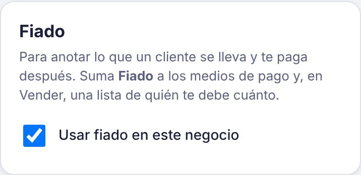
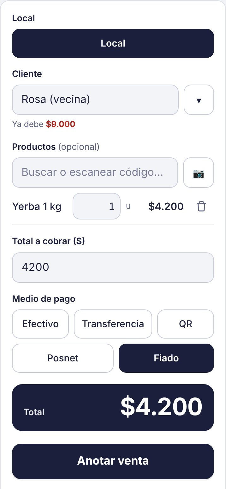
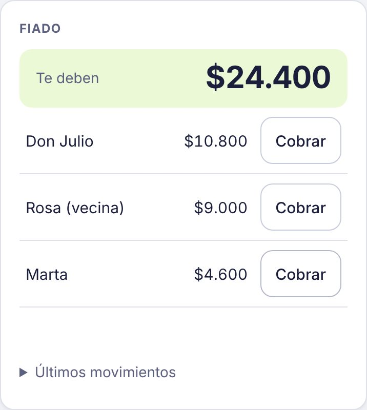
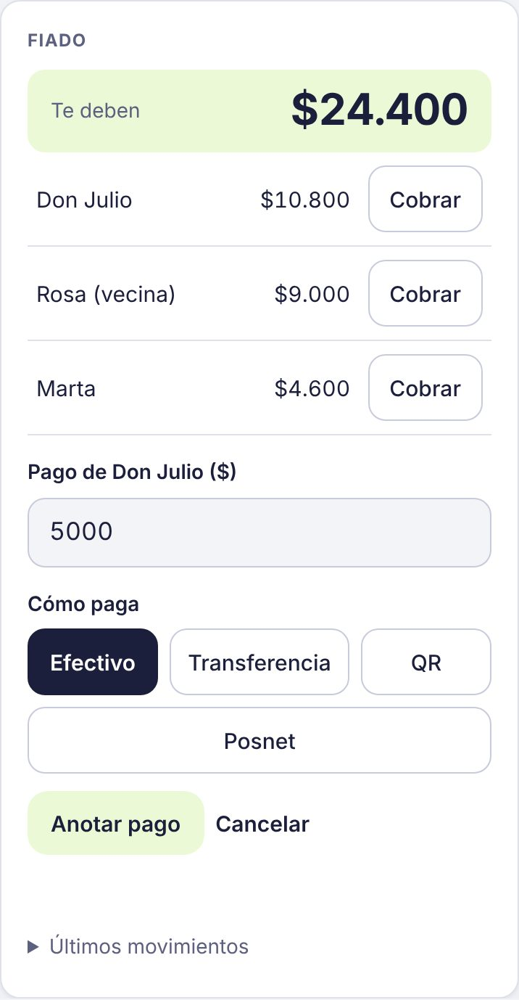

Cómo anotar el fiado y cobrar lo que te deben
El fiado viene apagado. Si en tu negocio fiás, lo prendés una vez y queda disponible para todos los que usan la caja.
-
Activalo en Ajustes
Entrá a Ajustes (el engranaje de arriba a la derecha) y en la tarjeta Fiado marcá Usar fiado en este negocio. Si después lo apagás, deja de aparecer, pero lo que te deben sigue a la vista.

-
Fiá una venta
En Vender, cargá los productos o el total y elegí Fiado como medio de pago. Escribí el nombre del cliente o elegilo de la lista: si ya te debe, Kovo te muestra cuánto. Tocá Anotar venta.

-
Mirá quién te debe
Abajo de la pantalla Vender está la tarjeta Fiado, con el total que te deben y cuánto debe cada cliente. En Últimos movimientos ves cada fiado y cada pago con su fecha.

-
Anotá cuando te pagan
Tocá Cobrar al lado del cliente, poné cuánto te paga (puede ser una parte) y cómo paga. Tocá Anotar pago y su deuda baja. Si paga en efectivo, en el resumen del día se suma al efectivo que tiene que haber en la caja.
